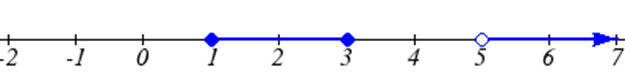
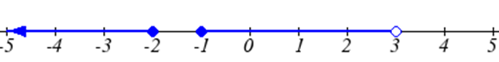
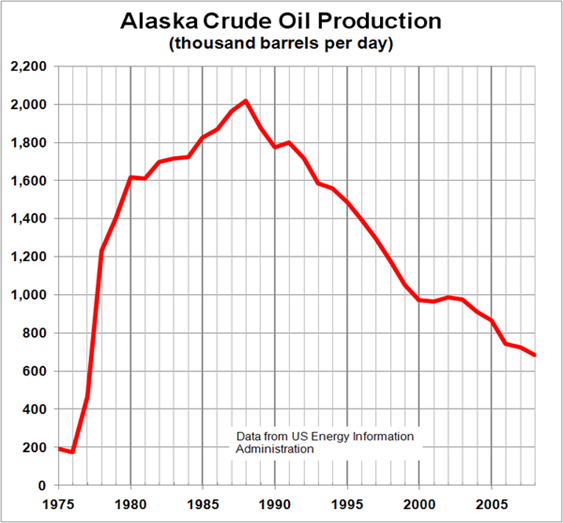
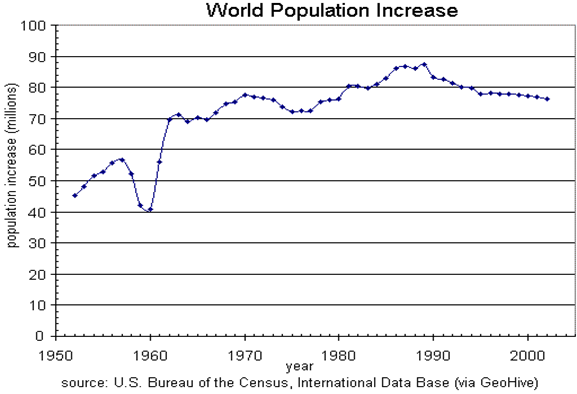

One of our main goals in mathematics is to model the real world with mathematical functions. In doing so, it is important to keep in mind the limitations of those models we create.
This table shows a relationship between circumference and height of a tree as it grows.
Circumference, \(c\)
1.7
2.5
5.5
8.2
13.7
Height, \(h\)
24.5
31
45.2
54.6
92.1
While there is a strong relationship between the two, it would certainly be ridiculous to talk about a tree with a circumference of -3 feet, or a height of 3000 feet. When we identify limitations on the inputs and outputs of a function, we are determining the domain and range of the function.
Definition1.3.1.Domain and Range.
Domain: The set of possible or acceptable input values to a function Range: The set of possible or acceptable output values of a function
Example1.3.2.
Using the tree table above, determine a reasonable domain and range.
We could combine the data provided with our own experiences and reason to approximate the domain and range of the function \(h = f(c)\text{.}\) For the domain, possible values for the input circumference \(c\text{,}\) it doesn’t make sense to have negative values, so \(c>0\text{.}\) We could make an educated guess at a maximum reasonable value, or look up that the maximum circumference measured is about 119 feet . With this information, we would say a reasonable domain is \(0<c\leq119\)feet.
Similarly for the range, it doesn’t make sense to have negative heights, and the maximum height of a tree could be looked up to be 379 feet, so a reasonable range is \(0<h\leq379\) feet.
Example1.3.3.
When sending a letter through the United States Postal Service, the price depends upon the weight of the letter, as shown in the table below. Determine the domain and range.
Weight not over
Price
1 ounce
$0.58
2 ounces
$0.78
3 ounces
$0.98
3.5 ounces
$1.18
Figure1.3.4.Letter Prices
Suppose we notate Weight by \(w\) and Price by \(p\text{,}\) and set up a function named \(f\text{,}\) where Price, \(p\) is a function of Weight, \(w\text{.}\)\(p = f(w)\text{.}\)
Since acceptable weights are 3.5 ounces or less, and negative weights don’t make sense, the domain would be \(0<w\leq3.5\text{.}\) Technically 0 could be included in the domain, but logically it would mean we are mailing nothing, so it doesn’t hurt to leave it out.
Since possible prices are from a limited set of values, we can only define the range of this function by listing the possible values. The range is \(p\) = $0.58, $0.78, $0.98, or $1.18.
Checkpoint1.3.5.
The population of a small town in the year 1960 was 100 people. Since then, the population has grown to 1400 people reported during the 2010 census. Choose descriptive variables for your input and output and use interval notation to write the domain and range.
Subsection1.3.2Notation
In the previous examples, we used inequalities to describe the domain and range of the functions. This is one way to describe intervals of input and output values, but is not the only way. Let us take a moment to discuss notation for domain and range.
Using inequalities, such as \(0<c\leq163\text{,}\)\(0<w\leq3.5\text{,}\) and \(0<h\leq379\) imply that we are interested in all values between the low and high values, including the high values in these examples.
However, occasionally we are interested in a specific list of numbers like the range for the price to send letters, \(p\) = $0.58, $0.78, $0.98, or $1.18. These numbers represent a set of specific values: \(\{0.58, 0.78, 0.98, 1.18\}\text{.}\)
Representing values as a set, or giving instructions on how a set is built, leads us to another type of notation to describe the domain and range.
Suppose we want to describe the values for a variable \(x\) that are 10 or greater, but less than 30. In inequalities, we would write \(10\leq x<30\text{.}\)
When describing domains and ranges, we sometimes extend this into set-builder notation, which would look like this: \(\{x|10\leq x<30\}\text{.}\) The curly brackets {} are read as “the set of”, and the vertical bar | is read as “such that”, so altogether we would read \(\{x|10\leq x<30\}\) as “the set of \(x\)-values such that 10 is less than or equal to \(x\) and \(x\) is less than 30.”
When describing ranges in set-builder notation, we could similarly write something like \(\{f(x)|0<f(x)<100\}\text{,}\) or if the output had its own variable, we could use it. So for our tree height example above, we could write for the range \(\{h|0<h\leq 379\}\text{.}\) In set-builder notation, if a domain or range is not limited, we could write \(\{t|t \text{ "is a real number"}\}\text{,}\) or \(\{t|t\in R\}\text{,}\) read as “the set of \(t\)-values such that \(t\) is an element of the set of real numbers.
A more compact alternative to set-builder notation is interval notation, in which intervals of values are referred to by the starting and ending values. Curved parentheses are used for “strictly less than,” and square brackets are used for “less than or equal to.” Since infinity is not a number, we can’t include it in the interval, so we always use curved parentheses with \(\infty\) and \(-\infty\text{.}\) The table below will help you see how inequalities correspond to set-builder notation and interval notation:
Inequality
Set Builder Notation
Interval Notation
\(5<h\leq 10\)
\(\{h|5<h\leq 10\}\)
\((5,10]\)
\(5\leq h <10\)
\(\{h|5\leq h <10\}\)
\([5,10)\)
\(5<h<10\)
\(\{h|5<h<10\}\)
\((5,10)\)
\(h<10\)
\(\{h|h<10\}\)
\((-\infty,10)\)
\(h\geq 10\)
\(\{h|h\geq 10\}\)
\([10,\infty)\)
all real numbers
\(\{h|h\in\mathbb{R}\}\)
\((- \infty, \infty)\)
To combine two intervals together, using inequalities or set-builder notation we can use the word “or”. In interval notation, we use the union symbol, \(\cup\text{,}\) to combine two unconnected intervals together.
Example1.3.6.
Describe the intervals of values shown on the line graph below using set builder and interval notations.

A number line from -2 to 7 with two shaded sections. There are closed dots at 1 and 3 with the number line between shaded. There is an open dot at 5 with the number line shaded to the right.
Figure1.3.7.
To describe the values, \(x\text{,}\) that lie in the intervals shown above we would say, “\(x\) is a real number greater than or equal to 1 and less than or equal to 3, or a real number greater than 5.”
As an inequality it is: \(1\leq x\leq 3\) or \(x>5\) In set builder notation: \(\{x|1\leq x\leq 3 \text{ or }x>5\}\) In interval notation: \([1,3]\cup(5,\infty)\)
Remember when writing or reading interval notation: Using a square bracket [ means the start value is included in the set Using a parenthesis ( means the start value is not included in the set
Checkpoint1.3.8.
Given the following interval, write its meaning in words, set builder notation, and interval notation.

A number line from -5 to 5 with two shaded sections. There is a closed dot at -2 with the number line to the left shaded. There is a closed dot at -1 and open dot at 3 with the number line between shaded.
Figure1.3.9.
Subsection1.3.3Domain and Range from Graphs
We can also talk about domain and range based on graphs. Since domain refers to the set of possible input values, the domain of a graph consists of all the input values shown on the graph. Remember that input values are almost always shown along the horizontal axis of the graph. Likewise, since range is the set of possible output values, the range of a graph we can see from the possible values along the vertical axis of the graph.
Be careful – if the graph continues beyond the window on which we can see the graph, the domain and range might be larger than the values we can see.
Example1.3.10.
Determine the domain and range of the graph below.

A graph labeled Alaska Crude Oil Production in thousands of barrels per day, with the horizontal axis showing years from 1975 to 2008, and the vertical axis from 0 to 2200. The graph starts in 1975 around 200, drops a little to about 180, increases up to about 2010 in 1988, then drops to about 700 in 2008.
Figure1.3.11.
In the graph above, the input quantity along the horizontal axis appears to be “year”, which we could notate with the variable \(y\text{.}\) The output is “thousands of barrels of oil per day”, which we might notate with the variable \(b\text{,}\) for barrels. The graph would likely continue to the left and right beyond what is shown, but based on the portion of the graph that is shown to us, we can determine the domain is \(1975\leq y\leq 2008\text{,}\) and the range is approximately \(180\leq b\leq 2010\text{.}\)
In interval notation, the domain would be \([1975, 2008]\) and the range would be about \([180, 2010]\text{.}\) For the range, we have to approximate the smallest and largest outputs since they don’t fall exactly on the grid lines.
Remember that, as in the previous example, \(x\) and \(y\) are not always the input and output variables. Using descriptive variables is an important tool to remembering the context of the problem.
Checkpoint1.3.12.
Given the graph below write the domain and range in interval notation

A graph labeled World Population Increase. The vertical axis is labeled population increase in millions, and the horizontal axis is in years. The graph starts around 45 in 1952, increases for a while, then drops to 40 in 1960. It increases and decreases a bit, reaching a high of 88 in 1989. The graph ends at 76 in 2002.
Figure1.3.13.
Subsection1.3.4Domains and Ranges of the Toolkit functions
We will now return to our set of toolkit functions to note the domain and range of each.
Constant Function: \(f(x)=c\)
The domain here is not restricted; \(x\) can be anything. When this is the case, we say the domain is all real numbers. The outputs are limited to the constant value of the function.
Domain: \((-\infty,\infty)\)
Range: \([c]\)
Since there is only one output value, we list it by itself in square brackets.
Identity Function: \(f(x)=x\)
Domain: \((-\infty,\infty)\)
Range: \((-\infty,\infty)\)
Quadratic Function: \(f(x)=x^{2}\)
Domain: \((-\infty,\infty)\)
Range: \([0,\infty)\)
Multiplying a negative or positive number by itself can only yield a positive output.
Cubic Function: \(f(x)=x^{3}\)
Domain: \((-\infty,\infty)\)
Range: \((-\infty,\infty)\)
Reciprocal: \(f(x)=\dfrac{1}{x}\)
Domain: \((-\infty,0)\cup(0,\infty)\)
We cannot divide by 0 so we must exclude 0 from the domain.
Range: \((-\infty,0)\cup(0,\infty)\)
One divided by any value can never be 0, so the range will not include 0.
Reciprocal squared: \(f(x)=\dfrac{1}{x^2}\)
Domain: \((-\infty,0)\cup(0,\infty)\)
We cannot divide by 0 so we must exclude 0 from the domain.
Range: \((0,\infty)\)
Since the denominator will always be positive, and 1 divided by a positive number will be positive, the range will always be positive.
Cube Root: \(f(x)=\sqrt[3]{x}\)
Domain: \((-\infty,\infty)\)
Range: \((-\infty,\infty)\)
Square Root: \(f(x)=\sqrt{x}\)
Domain: \([0,\infty)\)
When dealing with the set of real numbers we cannot take the square root of a negative number so the domain is limited to 0 or greater.
Range: \([0,\infty)\)
Absolute Value Function: \(f(x)=|x|\)
Domain: \((-\infty,\infty)\)
Range: \([0,\infty)\)
Since absolute value is defined as a distance from 0, the output can only be greater than or equal to 0.
Example1.3.14.
Find the domain of each function:
a) \(f(x)=2\sqrt{x+4}\)
b) \(g(x)=\dfrac{3}{6-3x}\)
a) Since we cannot take the square root of a negative number, we need the inside of the square root to be non-negative. \(x+4\geq0\) when \(x\geq-4\text{.}\) The domain of \(f(x)\) is \([-4,\infty)\text{.}\)
b) We cannot divide by zero, so we need the denominator to be non-zero. \(6-3x=0\) when \(x = 2\text{,}\) so we must exclude 2 from the domain. The domain of \(g(x)\) is \((-\infty,2)\cup(2,\infty)\text{.}\)